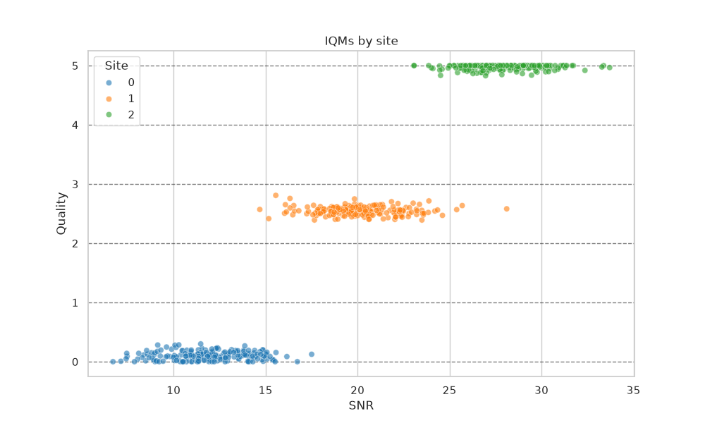
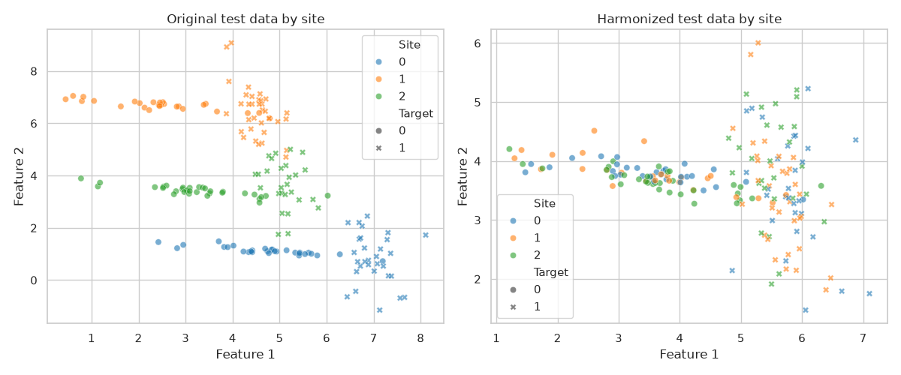
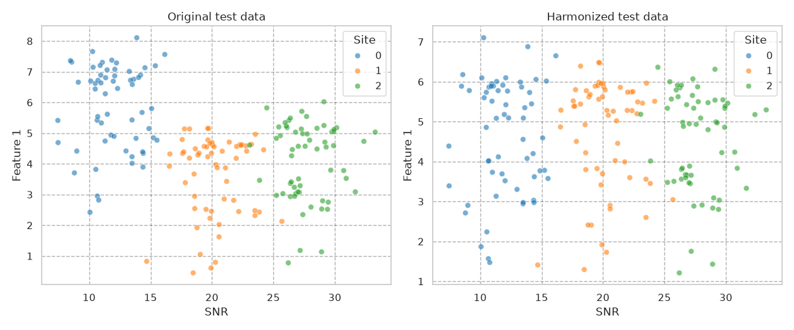
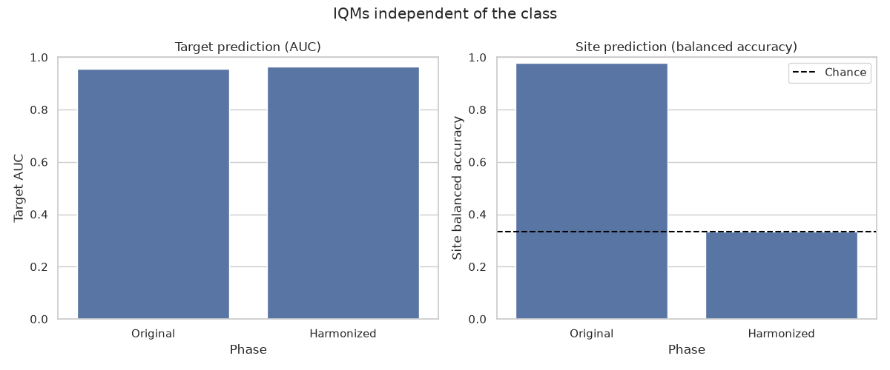
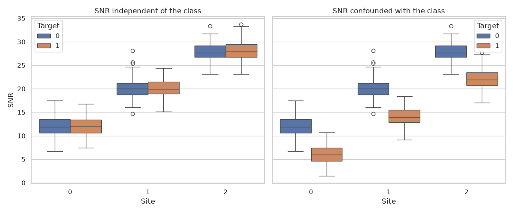
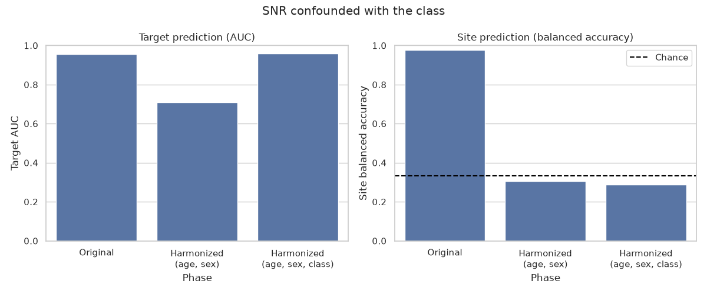

Note
Go to the end to download the full example code.
Binary classification with BARTharm#
BARTharm removes scanner effects using image quality metrics (IQMs) instead of site labels. Here, the sites differ in their IQMs (a quality score and the signal-to-noise ratio), so the IQMs carry the information about the scanner effect, and BARTharm learns it without ever seeing the site labels.
In the second part, we look at a limitation: what happens when an IQM is also related to the class we want to predict.
Imports#
import matplotlib.pyplot as plt
import numpy as np
import pandas as pd
import seaborn as sns
from sklearn.linear_model import LogisticRegression
from sklearn.metrics import balanced_accuracy_score, roc_auc_score
from sklearn.model_selection import train_test_split
from uniharmony import verbosity
from uniharmony.datasets import Covariate, CovariateSiteDistribution, make_multisite_classification
from uniharmony.iqm import BARTharm
sns.set_theme(style="whitegrid")
verbosity("warning")
Data generation#
Besides the biological covariates (age and sex), we simulate two IQMs whose
distribution differs by site: the "quality" preset and a custom
signal-to-noise ratio (SNR).
snr = Covariate(
name="snr",
site_distributions=[
CovariateSiteDistribution(loc=12.0, scale=2.0),
CovariateSiteDistribution(loc=20.0, scale=2.0),
CovariateSiteDistribution(loc=28.0, scale=2.0),
],
)
X, y, sites, covars = make_multisite_classification(
n_sites=3,
n_samples=600,
n_features=2,
site_effect_strength=6,
covariates=["age", "sex", "quality", snr],
random_state=42,
)
iqms = np.column_stack([covars["quality"], covars["snr"]])
biological_covariates = np.column_stack([covars["age"], covars["sex"]])
df_iqm = pd.DataFrame({"Quality": covars["quality"], "SNR": covars["snr"], "Site": sites})
plt.figure(figsize=[10, 6])
plt.title("IQMs by site")
sns.scatterplot(df_iqm, x="SNR", y="Quality", hue="Site", palette="tab10", alpha=0.6)
plt.grid(axis="y", color="black", alpha=0.5, linestyle="--")

Train/test split#
BARTharm is fitted on the training data only. New subjects are harmonized
with transform(), which only needs their
features and IQMs.
(
X_train,
X_test,
y_train,
y_test,
sites_train,
sites_test,
iqms_train,
iqms_test,
bio_train,
bio_test,
) = train_test_split(X, y, sites, iqms, biological_covariates, test_size=0.3, random_state=42, stratify=sites)
Harmonization#
The sampler settings are reduced to keep this example fast. The defaults (5000 iterations, 200 + 50 trees) are recommended for real analyses.
sampler_settings = {"n_iter": 600, "burn_in": 200, "n_trees_mu": 50, "n_trees_tau": 20, "n_jobs": 2, "random_state": 42}
bartharm = BARTharm(**sampler_settings)
X_train_harmonized = bartharm.fit_transform(X_train, iqms_train, biological_covariates=bio_train)
X_test_harmonized = bartharm.transform(X_test, iqms_test)
Plotting#
df_orig = pd.DataFrame(X_test, columns=["Feature 1", "Feature 2"])
df_orig["Site"] = sites_test
df_orig["Target"] = y_test
df_harm = pd.DataFrame(X_test_harmonized, columns=["Feature 1", "Feature 2"])
df_harm["Site"] = sites_test
df_harm["Target"] = y_test
fig, axes = plt.subplots(1, 2, figsize=(12, 5))
sns.scatterplot(
data=df_orig, x="Feature 1", y="Feature 2", hue="Site", style="Target", palette="tab10", alpha=0.6, ax=axes[0]
)
axes[0].set_title("Original test data by site")
sns.scatterplot(
data=df_harm, x="Feature 1", y="Feature 2", hue="Site", style="Target", palette="tab10", alpha=0.6, ax=axes[1]
)
axes[1].set_title("Harmonized test data by site")
plt.tight_layout()

The scanner effect was a function of the IQMs; after harmonization the features no longer depend on the SNR.
df_orig["SNR"] = iqms_test[:, 1]
df_harm["SNR"] = iqms_test[:, 1]
fig, axes = plt.subplots(1, 2, figsize=(12, 5))
sns.scatterplot(data=df_orig, x="SNR", y="Feature 1", hue="Site", palette="tab10", alpha=0.6, ax=axes[0])
axes[0].set_title("Original test data")
axes[0].grid(alpha=0.3, color="black", linestyle="--")
sns.scatterplot(data=df_harm, x="SNR", y="Feature 1", hue="Site", palette="tab10", alpha=0.6, ax=axes[1])
axes[1].set_title("Harmonized test data")
axes[1].grid(alpha=0.3, color="black", linestyle="--")
plt.tight_layout()

Effect on the classifier and on site information#
A good harmonization keeps the class information and removes the site information: predicting the site from the features should drop to chance level (1/3 balanced accuracy with three sites).
def evaluate(phase, train, test):
"""Return the test AUC for the target and the balanced accuracy for the site."""
auc = roc_auc_score(y_test, LogisticRegression().fit(train, y_train).predict_proba(test)[:, 1])
site_accuracy = balanced_accuracy_score(sites_test, LogisticRegression().fit(train, sites_train).predict(test))
return {"Phase": phase, "Target AUC": auc, "Site balanced accuracy": site_accuracy}
def plot_results(df_results, title):
"""Plot target AUC and site balanced accuracy side by side."""
fig, axes = plt.subplots(1, 2, figsize=(12, 5))
sns.barplot(data=df_results, x="Phase", y="Target AUC", ax=axes[0])
axes[0].set_ylim(0, 1)
axes[0].set_title("Target prediction (AUC)")
sns.barplot(data=df_results, x="Phase", y="Site balanced accuracy", ax=axes[1])
axes[1].axhline(1 / 3, color="black", linestyle="--", label="Chance")
axes[1].set_ylim(0, 1)
axes[1].set_title("Site prediction (balanced accuracy)")
axes[1].legend()
fig.suptitle(title)
plt.tight_layout()
df_results = pd.DataFrame(
[
evaluate("Original", X_train, X_test),
evaluate("Harmonized", X_train_harmonized, X_test_harmonized),
]
)
print(df_results.round(3))
plot_results(df_results, "IQMs independent of the class")

Phase Target AUC Site balanced accuracy
0 Original 0.957 0.978
1 Harmonized 0.965 0.333
Limitation: IQMs confounded with the class#
IQMs are not always independent of biology. Patients with Parkinson’s disease, for example, move more in the scanner, and head motion changes the image quality: the SNR then depends on the diagnosis, not only on the scanner.
We simulate this by lowering the SNR of class 1 (the “patients”), while the features themselves are exactly the same as before.
iqms_confounded = iqms.copy()
iqms_confounded[:, 1] = covars["snr"] - 6.0 * y
iqms_confounded_train, iqms_confounded_test = train_test_split(
iqms_confounded, test_size=0.3, random_state=42, stratify=sites
)
df_iqm["SNR (confounded)"] = iqms_confounded[:, 1]
df_iqm["Target"] = y
fig, axes = plt.subplots(1, 2, figsize=(12, 5), sharey=True)
sns.boxplot(data=df_iqm, x="Site", y="SNR", hue="Target", ax=axes[0])
axes[0].set_title("SNR independent of the class")
sns.boxplot(data=df_iqm, x="Site", y="SNR (confounded)", hue="Target", ax=axes[1])
axes[1].set_title("SNR confounded with the class")
axes[1].set_ylabel("SNR")
plt.tight_layout()

BARTharm attributes everything the IQMs can explain to the scanner. As the SNR now also carries the class, the scanner forest learns part of the class effect, and harmonization removes it from the features.
Protecting the class with the biological covariates#
Signal explained by the biological covariates is kept: adding the class to the biological covariates lets the biological forest explain the class effect, so the scanner forest no longer learns it.
Without variance scaling (var_scaling=False), the biological covariates
are only used to fit the model: transform()
only needs the features and IQMs of the test subjects. The training labels
can therefore be used without the test labels ever being seen.
bio_train_with_target = np.column_stack([bio_train, y_train])
bartharm_protected = BARTharm(**sampler_settings)
X_train_protected = bartharm_protected.fit_transform(
X_train, iqms_confounded_train, biological_covariates=bio_train_with_target
)
X_test_protected = bartharm_protected.transform(X_test, iqms_confounded_test)
Caution
This only holds without variance scaling. With var_scaling=True, the
biological covariates are also needed by transform, which would
require the test labels and leak them into the harmonized features.
In general, fit the harmonizer inside the cross-validation loop, on the
training folds only.
Results#
df_results_confounded = pd.DataFrame(
[
evaluate("Original", X_train, X_test),
evaluate("Harmonized\n(age, sex)", X_train_confounded, X_test_confounded),
evaluate("Harmonized\n(age, sex, class)", X_train_protected, X_test_protected),
]
)
print(df_results_confounded.round(3))
plot_results(df_results_confounded, "SNR confounded with the class")

Phase Target AUC Site balanced accuracy
0 Original 0.957 0.978
1 Harmonized\n(age, sex) 0.710 0.306
2 Harmonized\n(age, sex, class) 0.960 0.289
Total running time of the script: (1 minutes 17.108 seconds)